Introduction to Optimization
CO 250
Lecture 21
PDF version of these slides (demo: this PDF version is experimental and may contain errors or differ from the slides)
News on the Simplex Method
Simplex Method News
Geometrically, the simplex method starts at some vertex of a polytope and moves along the edges of the polytope towards better objective values.
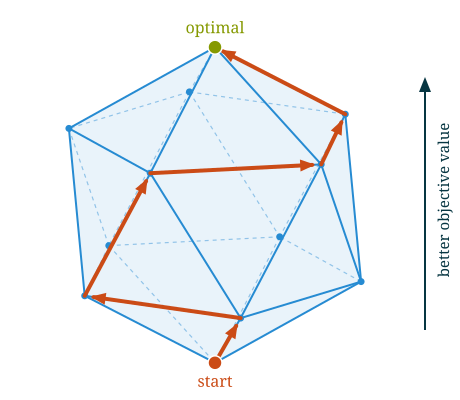
Simplex Method News
There are many such possible paths; a pivot rule tells you at each vertex which edge to explore next. Bland's rule is one such pivot rule.
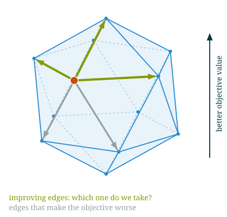
Simplex Method News
It is known that there are some polytopes with few inequalities where Bland's rule takes a really long time to find a solution (the number of steps grows like $2^n$).
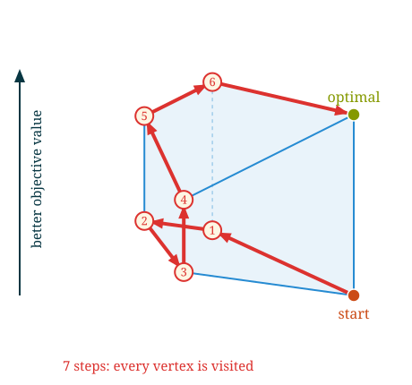
Simplex Method News
These polytopes are very rare and hard to find, so this isn't an issue in practice. Still, people wondered if there is a different pivot rule so that the number of steps it takes to get to the optimum is always a relatively small number (bounded from above by $m^k$ for some $k$, where $m$ is the number of inequalities).
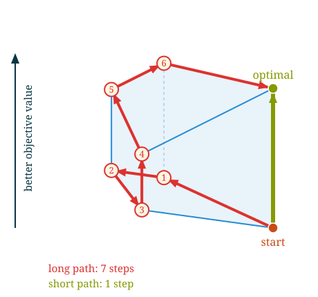
If such a rule existed, it would also show that there are relatively short paths joining any two vertices of a polytope
Simplex Method News
It was believed there is always such a path with length at most $m$ (the number of inequalitie). This is more or less the Hirsch conjecture, but it was disproven by Francisco Santos Leal in 2010.
OpenAI just showed that there is a polytope with two vertices that cannot be joined by any path of length at most roughly $m^{\log_2(n)}$, which is still very large.
Simplex Method News
This means that for some (very specific, hard to describe) polytopes, no simplex like algorithm can succeed in a reasonable amount of time.
Lecture Outline
- Review: Cutting Planes for $x^*$
- Convex Functions and Nonlinear Programming
- Subgradients
Review: Cutting Planes for $x^*$
Review: Cutting Planes for $x^*$
Consider the integer program and its LP relaxation, with LP optimal solution $x^*$: \[ \max \{c^{\intercal}x : Ax \le b,\ x \in \Z^n\}, \qquad \max \{c^{\intercal}x : Ax \le b,\ x \in \R^n\}. \]
A valid cutting plane for the integer program is an inequality \[ f^{\intercal}x \le v \] that holds for every integer feasible point $x$.
Adding a valid cutting plane to the LP relaxation never removes an integer feasible point.
Review: Cutting Planes for $x^*$
Definition
A cutting plane for $x^*$ is an inequality $f^{\intercal}x \le v$ such that
\[ f^{\intercal}x \le v \quad \text{for every } x \text{ feasible for the IP}, \]
\[ f^{\intercal}x^* > v. \]
It keeps every integer feasible point, but removes $x^*$ from the LP relaxation.
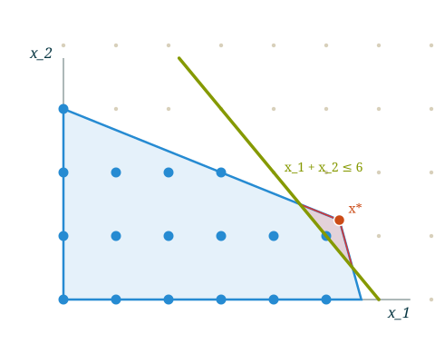
6." />Review: Cutting Planes for $x^*$
A valid cutting plane that $x^*$ still satisfies does not change the LP optimum, so it does not improve the bound on the IP.

Valid, but not a cutting plane for $x^*$
A cutting plane for $x^*$
Review: Cutting Planes for $x^*$
For an integer program in SEF, put the LP relaxation in canonical form for its optimal basis $B$. Each row reads \[ x_{B(i)} + \sum_{j \in N} \bar{a}_{ij}\, x_j = \bar{b}_i. \]
Cutting plane from a canonical form row
If $\bar{b}_i \notin \Z$, then \[ x_{B(i)} + \sum_{j \in N} \lfloor \bar{a}_{ij} \rfloor\, x_j \;\le\; \lfloor \bar{b}_i \rfloor \] is a cutting plane for $x^*$.
Example: A Cutting Plane from Canonical Form
The integer program in SEF: \[\begin{aligned} \max \qquad & 4x_1 + 3x_2 + 2x_3 + 4x_4\\ \text{s.t.} \qquad & x_1 + 2x_2 + 3x_3 + x_4 = 11\\ & 2x_1 + x_2 + x_3 + 4x_4 = 12\\ & x_1, x_2, x_3, x_4 \ge 0\\ & x_1, x_2, x_3, x_4 \in \Z \end{aligned} \]
The LP relaxation has optimal basis $B = \{1, 2\}$.
Example: A Cutting Plane from Canonical Form
Canonical form for the optimal basis $B = \{1, 2\}$: \[\begin{aligned} \max \qquad & \tfrac{82}{3} - \tfrac{5}{3}x_3 - \tfrac{10}{3}x_4\\ \text{s.t.} \qquad & x_1 - \tfrac{1}{3}x_3 + \tfrac{7}{3}x_4 = \tfrac{13}{3}\\ & x_2 + \tfrac{5}{3}x_3 - \tfrac{2}{3}x_4 = \tfrac{10}{3}\\ & x_1, x_2, x_3, x_4 \ge 0 \end{aligned} \]
\[ x^* = \left(\tfrac{13}{3}, \tfrac{10}{3}, 0, 0\right), \qquad \text{LP optimal value } \tfrac{82}{3} \]
Example: A Cutting Plane from Canonical Form
The $x_1$ row of the canonical form: \[ x_1 - \tfrac{1}{3}x_3 + \tfrac{7}{3}x_4 = \tfrac{13}{3} \]
\[\begin{aligned} x_1 + \left\lfloor -\tfrac{1}{3} \right\rfloor x_3 + \left\lfloor \tfrac{7}{3} \right\rfloor x_4 &\le \left\lfloor \tfrac{13}{3} \right\rfloor\\ x_1 - x_3 + 2x_4 &\le 4 \end{aligned}\]
Example: A Cutting Plane from Canonical Form
Why is $x_1 - x_3 + 2x_4 \le 4$ a cutting plane for $x^*$?
It holds for every integer feasible point. Since $x_3, x_4 \ge 0$, rounding the coefficients down can only decrease the left side: \[ x_1 - x_3 + 2x_4 \;\le\; x_1 - \tfrac{1}{3}x_3 + \tfrac{7}{3}x_4 = \tfrac{13}{3}. \] For integer $x$ the left side is an integer, and an integer that is at most $\tfrac{13}{3}$ is at most $4$.
It removes $x^*$. At $x^* = \left(\tfrac{13}{3}, \tfrac{10}{3}, 0, 0\right)$, \[ x_1^* - x_3^* + 2x_4^* = \tfrac{13}{3} > 4. \]
Convex Functions
Convex Functions
Definition
A function $f : \R^n \to \R$ is convex if for all $x, y \in \R^n$ and all $\lambda \in [0, 1]$,
\[ f(\lambda x + (1 - \lambda) y) \le \lambda f(x) + (1 - \lambda) f(y). \]
Geometrically: the line segment joining any two points on the graph of $f$ lies on or above the graph.
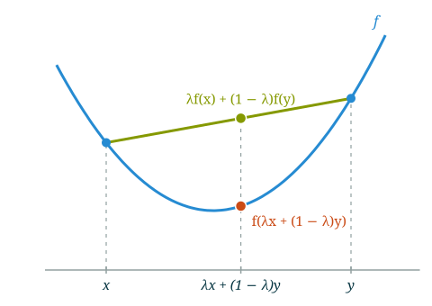
Convex Functions
A function that is not convex: for these $x$, $y$ and $\lambda$,
\[ f(\lambda x + (1 - \lambda) y) > \lambda f(x) + (1 - \lambda) f(y). \]
The line segment joining these two points of the graph passes below the graph.
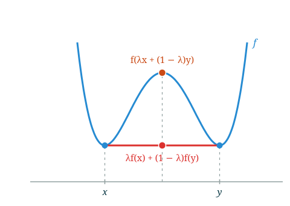
Convex Functions
Definition
The epigraph of a function $f : \R^n \to \R$ is the set of points on or above its graph:
\[ \text{epi}(f) = \{(x, t) \in \R^n \times \R : t \ge f(x)\}. \]
The epigraph is a subset of $\R^{n+1}$, so we can ask whether it is a convex set.
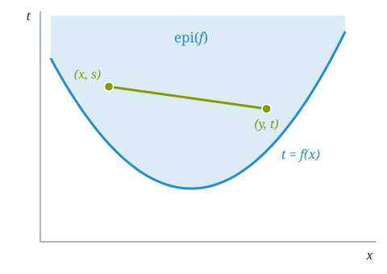
Convex Functions
Epigraph characterization of convexity
A function $f : \R^n \to \R$ is convex if and only if $\text{epi}(f)$ is a convex set.
Convex Functions
Proof ($\Rightarrow$) Suppose $f$ is convex. Let $(x, s), (y, t) \in \text{epi}(f)$. That means that $s \ge f(x)$ and $t \ge f(y)$.
For $\lambda \in [0,1]$, since $f$ is convex,
\[ f(\lambda x + (1 - \lambda) y) \;\le\; \lambda f(x) + (1 - \lambda) f(y) \;\le\; \lambda s + (1 - \lambda) t. \]
This says exactly that
\[ \lambda (x, s) + (1 - \lambda)(y, t) = \left(\lambda x + (1 - \lambda) y,\ \lambda s + (1 - \lambda) t\right) \in \text{epi}(f), \]
so $\text{epi}(f)$ is a convex set.
Convex Functions
($\Leftarrow$) Suppose $\text{epi}(f)$ is a convex set. Let $x, y \in \R^n$ and $\lambda \in [0, 1]$.
The points $(x, f(x))$ and $(y, f(y))$ lie on the graph of $f$, so they are in $\text{epi}(f)$. Since $\text{epi}(f)$ is convex,
\[ \lambda (x, f(x)) + (1 - \lambda)(y, f(y)) = \left(\lambda x + (1 - \lambda) y,\ \lambda f(x) + (1 - \lambda) f(y)\right) \in \text{epi}(f). \]
By the definition of the epigraph, this means
\[ \lambda f(x) + (1 - \lambda) f(y) \;\ge\; f(\lambda x + (1 - \lambda) y), \]
so $f$ is convex.
This lets us use what we know about convex sets to show that functions are convex.
Convex Functions
Example: a piecewise linear function on $\R$,
\[ f(x) = \max\left\{-x,\ \tfrac{1}{2}x,\ 2x - 3\right\}. \]
\[ f(x) = \begin{cases} -x & x \le 0 \\ \tfrac{1}{2}x & 0 \le x \le 2 \\ 2x - 3 & x \ge 2 \end{cases} \]
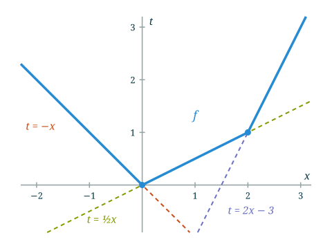
Convex Functions
$t \ge f(x)$ exactly when $t$ is at least each of the three affine pieces, so
\[ \text{epi}(f) = \left\{(x, t) : \begin{aligned} t &\ge -x \\ t &\ge \tfrac{1}{2}x \\ t &\ge 2x - 3 \end{aligned}\right\}. \]
This is a polytope! So it convex.
So $\text{epi}(f)$ is a convex set, and therefore $f$ is a convex function.
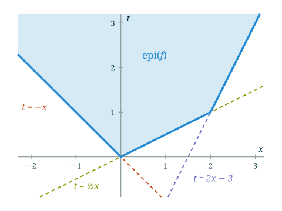
Convex Functions
The same argument works for any maximum of affine functions on $\R^n$: \[ f(x) = \max\{a_1^{\intercal}x + b_1,\ \dots,\ a_m^{\intercal}x + b_m\}. \]
\[ \text{epi}(f) = \{(x, t) \in \R^n \times \R : a_i^{\intercal}x - t \le -b_i \ \text{ for } i = 1, \dots, m\} \]
The epigraph is a polyhedron, so it is convex, and $f$ is convex.
Convex Functions
Example: $f(x) = x^2$ on $\R$. For $x, y \in \R$ and $\lambda \in [0, 1]$:
Consider \[ \lambda f(x) + (1 - \lambda) f(y) - f(\lambda x + (1 - \lambda) y); \] this is nonnegative if and only if $f$ is convex.
Plugging in for $f$ gives \[ \lambda x^2 + (1 - \lambda) y^2 - (\lambda x + (1 - \lambda) y)^2. \]
Expanding gives \[\begin{aligned} \lambda(1 - \lambda) x^2 - 2\lambda(1 - \lambda) xy + \lambda(1 - \lambda) y^2\\ = \lambda(1 - \lambda)(x^2 - 2 xy + y^2)\\ = \lambda(1 - \lambda)(x - y)^2\\ \ge 0 \end{aligned}\]
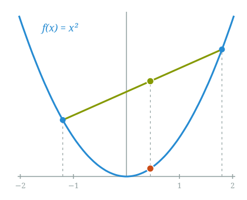
Convex Functions
Convex functions are also closed under taking sums: if $f, g : \R^n \to \R$ are convex, then $f + g$ is convex.
Example: the squared $L^2$ norm on $\R^n$,
\[ f(x) = \|x\|_2^2 = x_1^2 + x_2^2 + \dots + x_n^2. \]
Each term $x \mapsto x_i^2$ is convex, by the previous example, so their sum $\|x\|_2^2$ is convex.
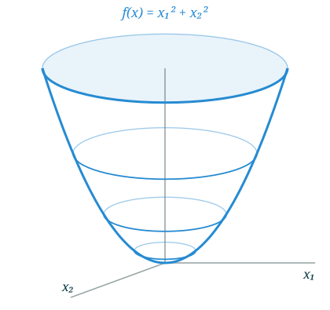
Convex Functions
Second derivative characterization of convexity
Let $f : \R \to \R$ be twice differentiable. Then $f$ is convex if and only if
\[ f''(x) \ge 0 \quad \text{for all } x \in \R. \]
Convex Functions
Proof ($\Leftarrow$) Suppose $f''(x) \ge 0$ for all $x$, so that $f'$ is nondecreasing.
Let $x < y$ and $\lambda \in (0, 1)$, and set $z = \lambda x + (1 - \lambda) y$, so that
\[ z - x = (1 - \lambda)(y - x), \qquad y - z = \lambda (y - x). \]
By the mean value theorem there are $a \in (x, z)$ and $b \in (z, y)$ with
\[ f(z) - f(x) = f'(a)(z - x), \qquad f(y) - f(z) = f'(b)(y - z). \]
Since $a < b$ and $f'$ is nondecreasing, $f'(a) \le f'(b)$.
Convex Functions
Then
\[\begin{aligned} \lambda f(x) + (1 - \lambda) f(y) - f(z) &= (1 - \lambda)\left(f(y) - f(z)\right) - \lambda\left(f(z) - f(x)\right)\\ &= (1 - \lambda) f'(b)(y - z) - \lambda f'(a)(z - x)\\ &= \lambda(1 - \lambda)(y - x)\left(f'(b) - f'(a)\right)\\ &\ge 0. \end{aligned}\]
So $f(\lambda x + (1 - \lambda) y) \le \lambda f(x) + (1 - \lambda) f(y)$, and $f$ is convex.
Convex Functions
($\Rightarrow$) Suppose $f$ is convex. Let $x < z < y$ and write $z = \lambda x + (1 - \lambda) y$ with $\lambda \in (0, 1)$.
Subtracting $f(x)$ from both sides of $f(z) \le \lambda f(x) + (1 - \lambda) f(y)$, and using $z - x = (1 - \lambda)(y - x)$:
\[ f(z) - f(x) \le (1 - \lambda)\left(f(y) - f(x)\right) \quad\Longrightarrow\quad \frac{f(z) - f(x)}{z - x} \le \frac{f(y) - f(x)}{y - x}. \]
Subtracting both sides from $f(y)$ instead, and using $y - z = \lambda(y - x)$:
\[ f(y) - f(z) \ge \lambda\left(f(y) - f(x)\right) \quad\Longrightarrow\quad \frac{f(y) - f(x)}{y - x} \le \frac{f(y) - f(z)}{y - z}. \]
Convex Functions
Taking $z \to x$ in the first inequality and $z \to y$ in the second:
\[ f'(x) \;\le\; \frac{f(y) - f(x)}{y - x} \;\le\; f'(y). \]
So $f'(x) \le f'(y)$ whenever $x < y$: the derivative $f'$ is nondecreasing. Therefore
\[ f''(x) = \lim_{h \to 0^+} \frac{f'(x + h) - f'(x)}{h} \ge 0. \qquad \blacksquare \]
Convex Functions
Example: $f(x) = e^x$ on $\R$.
\[ f'(x) = e^x, \qquad f''(x) = e^x > 0 \quad \text{for all } x \in \R \]
By the second derivative characterization, $e^x$ is convex.
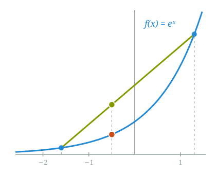
Convex Functions
For $f : \R^n \to \R$, the Hessian of $f$ at $x$ is the $n \times n$ symmetric matrix of second partial derivatives:
\[ \nabla^2 f(x) = \begin{pmatrix} \dfrac{\partial^2 f}{\partial x_1^2}(x) & \cdots & \dfrac{\partial^2 f}{\partial x_1 \partial x_n}(x) \\ \vdots & \ddots & \vdots \\ \dfrac{\partial^2 f}{\partial x_n \partial x_1}(x) & \cdots & \dfrac{\partial^2 f}{\partial x_n^2}(x) \end{pmatrix}. \]
Second derivative characterization of convexity in $\R^n$ (stated without proof)
Let $f : \R^n \to \R$ be twice continuously differentiable. Then $f$ is convex if and only if, for every $x \in \R^n$, the eigenvalues of the Hessian $\nabla^2 f(x)$ are all nonnegative.
Convex Nonlinear Programs
Convex Nonlinear Programs
Definition
A convex nonlinear program is an optimization problem of the form
\[\begin{aligned} \min \qquad & f(x)\\ \text{s.t.} \qquad & g_i(x) \le 0 \qquad i = 1, \dots, m, \end{aligned}\]
where $f, g_1, \dots, g_m : \R^n \to \R$ are all convex functions.
Convex Nonlinear Programs
The sublevel sets of a convex function are convex: if $g : \R^n \to \R$ is convex and $t \in \R$, then \[ \{x \in \R^n : g(x) \le t\} \] is a convex set.
The feasible region of a convex nonlinear program is an intersection of sublevel sets, \[ \{x \in \R^n : g_1(x) \le 0\} \cap \dots \cap \{x \in \R^n : g_m(x) \le 0\}, \] so it is a convex set.
Convex Nonlinear Programs
Example: the constrained formulation of LASSO. Given data $(x_1, y_1), \dots, (x_D, y_D)$ and $k \ge 0$,
\[\begin{aligned} \min \qquad & \sum_{i=1}^{D} \left(\langle \theta, x_i \rangle - y_i\right)^2\\ \text{s.t.} \qquad & \|\theta\|_1 \le k, \end{aligned}\]
where $\|\theta\|_1 = \sum_{j=1}^{n} |\theta_j|$.
This is a convex nonlinear program in the variable $\theta$, with
\[\begin{aligned} f(\theta) &= \sum_{i=1}^{D} \left(\langle \theta, x_i \rangle - y_i\right)^2,\\ g_1(\theta) &= \|\theta\|_1 - k. \end{aligned}\]
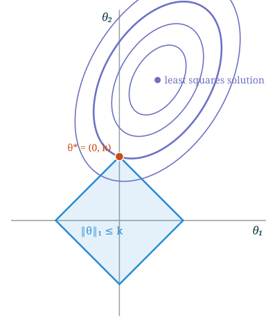
Solving Nonlinear Programs
Solving Nonlinear Programs
How do we solve nonlinear programs?
A simpler question first: how can we solve a nonlinear program with no constraints?
\[ \min_{x \in \R^n} \ f(x) \]
Solving Nonlinear Programs
Remember an idea from calculus:
If $f : \R \to \R$ is differentiable and $x_0$ is a minimizer of $f$, then
\[ f'(x_0) = 0. \]
Solving Nonlinear Programs
But functions like $f(x) = |x|$ do not have derivatives at all points:
\[ f'(x) = \begin{cases} 1 & \text{if } x > 0 \\ -1 & \text{if } x < 0 \\ \text{undefined} & \text{if } x = 0. \end{cases} \]

The minimizer of $|x|$ is $x_0 = 0$, which is exactly the point where $f$ is not differentiable. So there is no point $x_0$ where $f'(x_0) = 0$.
Solving Nonlinear Programs
Definition
Let $f : \R^n \to \R$ and $x_0 \in \R^n$. A vector $s \in \R^n$ is a subgradient of $f$ at $x_0$ if the affine function
\[ h(x) = f(x_0) + s^{\intercal}(x - x_0) \]
satisfies $h(x) \le f(x)$ for all $x \in \R^n$.
So $h$ is an affine function that lower bounds $f$ everywhere, and equals $f$ at $x_0$: $h(x_0) = f(x_0)$.
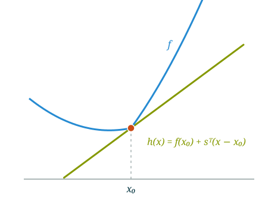
Solving Nonlinear Programs
Example: $f(x) = |x|$ at the point $x_0 = 0$, with $s = 0$.
\[ h(x) = f(0) + 0 \cdot (x - 0) = 0 \]
\[ h(x) = 0 \le |x| = f(x) \quad \text{for all } x \in \R \]
So $0$ is a subgradient of $|x|$ at $x_0 = 0$.
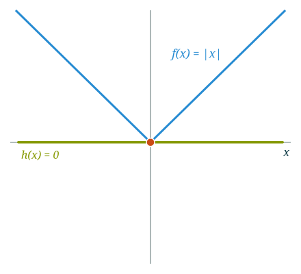
Solving Nonlinear Programs
In fact, $c$ is a subgradient of $|x|$ at $x_0 = 0$ for any $c$ with $-1 \le c \le 1$: the affine function is $h(x) = f(0) + c(x - 0) = cx$, and $cx \le |x|$ for all $x$.
Solving Nonlinear Programs
Theorem (existence of subgradients)
Let $f : \R^n \to \R$ be a convex function. Then at every point $x_0 \in \R^n$, there is at least one subgradient of $f$ at $x_0$.
The proof follows from the separating hyperplane theorem.
Solving Nonlinear Programs
Recall: the gradient of $f : \R^n \to \R$ at $x$ is the vector of partial derivatives of $f$:
\[ \nabla f(x) = \begin{pmatrix} \frac{\partial f}{\partial x_1}(x) \\ \vdots \\ \frac{\partial f}{\partial x_n}(x) \end{pmatrix}. \]
Example: $f(x, y) = x^2 + y^2$.
\[ \nabla f(x, y) = \begin{pmatrix} 2x \\ 2y \end{pmatrix}, \qquad \nabla f(1, 1) = \begin{pmatrix} 2 \\ 2 \end{pmatrix} \]
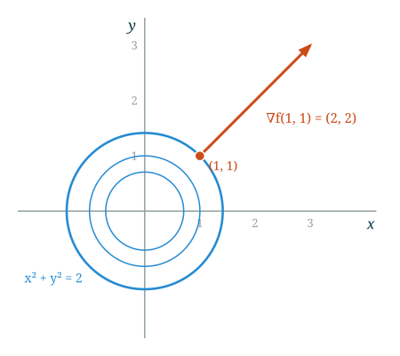
Solving Nonlinear Programs
For $f(x, y) = x^2 + y^2$, take $s = \nabla f(1, 1) = (2, 2)$:
\[\begin{aligned} h(x, y) &= f(1, 1) + s^{\intercal}\left((x, y) - (1, 1)\right)\\ &= 2 + 2(x - 1) + 2(y - 1) \end{aligned}\]
\[\begin{aligned} f(x, y) - h(x, y) &= x^2 + y^2 - 2x - 2y + 2\\ &= (x - 1)^2 + (y - 1)^2\\ &\ge 0 \end{aligned}\]
So the gradient $\nabla f(1, 1)$ is a subgradient of $f$ at $(1, 1)$.
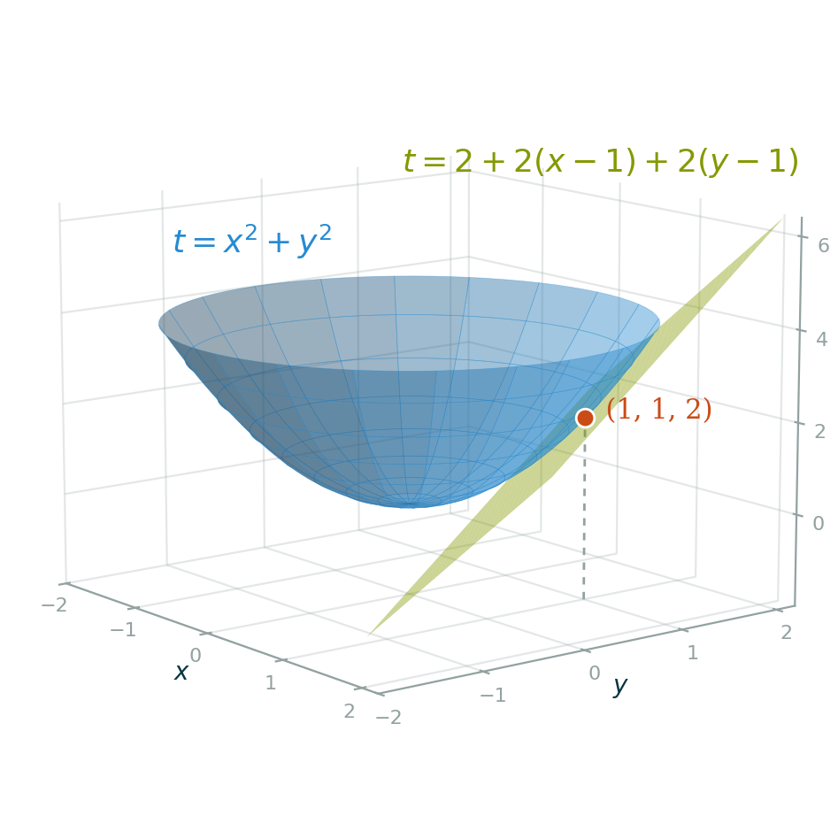
Solving Nonlinear Programs
Theorem (the gradient is a subgradient)
Let $f : \R^n \to \R$ be a convex function that is differentiable at $x_0$. Then $\nabla f(x_0)$ is a subgradient of $f$ at $x_0$, with affine lower bound
\[ h(x) = f(x_0) + \nabla f(x_0)^{\intercal}(x - x_0). \]
Equivalently,
\[ f(x) \ge f(x_0) + \nabla f(x_0)^{\intercal}(x - x_0) \quad \text{for all } x \in \R^n. \]
Solving Nonlinear Programs
Proof Fix $x \in \R^n$ and let $\lambda \in (0, 1]$. Since $f$ is convex,
\[ f(x_0 + \lambda(x - x_0)) = f((1 - \lambda)x_0 + \lambda x) \le (1 - \lambda) f(x_0) + \lambda f(x). \]
Subtracting $f(x_0)$ from both sides and dividing by $\lambda > 0$,
\[ \frac{f(x_0 + \lambda(x - x_0)) - f(x_0)}{\lambda} \le f(x) - f(x_0). \]
Since $f$ is differentiable at $x_0$, as $\lambda \to 0^+$ the left side converges to the directional derivative $\nabla f(x_0)^{\intercal}(x - x_0)$. So
\[ \nabla f(x_0)^{\intercal}(x - x_0) \le f(x) - f(x_0). \qquad \blacksquare \]
Solving Nonlinear Programs
Example: $f(x) = e^x$ at the point $x_0 = 0$.
\[ f'(x) = e^x, \qquad f'(0) = 1 \]
$f$ is convex and differentiable, so $s = 1$ is a subgradient of $e^x$ at $x_0 = 0$:
\[ h(x) = f(0) + f'(0)(x - 0) = 1 + x \]
\[ e^x \ge 1 + x \quad \text{for all } x \in \R \]
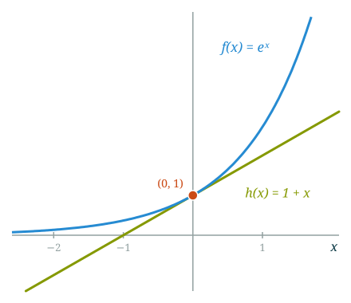
Solving Nonlinear Programs
We can also prove $e^x \ge 1 + x$ directly. Let $g(x) = e^x - 1 - x$.
\[ g'(x) = e^x - 1 \quad \begin{cases} < 0 & \text{if } x < 0 \\ = 0 & \text{if } x = 0 \\ > 0 & \text{if } x > 0 \end{cases} \]
So $g$ is decreasing for $x < 0$ and increasing for $x > 0$: its minimum is at $x = 0$.
\[ e^x - 1 - x = g(x) \ge g(0) = 0 \]
Solving Nonlinear Programs
At every point $x_0$, the function $e^x$ has exactly one subgradient, $s = e^{x_0}$:
\[ e^x \ge e^{x_0} + e^{x_0}(x - x_0). \]
The picture shows these affine lower bounds at $x_0 = -2, -1.5, -1, \dots, 1.5$.
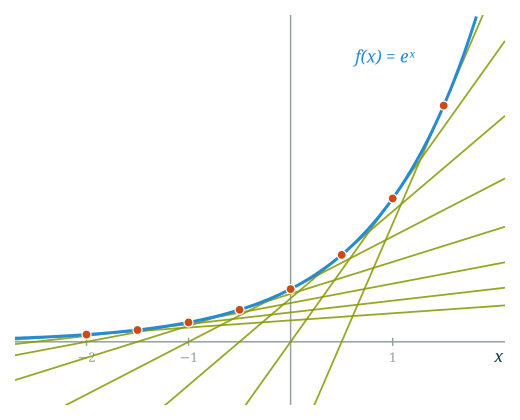
Solving Nonlinear Programs
Theorem
Let $f : \R^n \to \R$ and $x_0 \in \R^n$. If $0$ is a subgradient of $f$ at $x_0$, then $x_0$ is a minimizer of $f$:
\[ f(x) \ge f(x_0) \quad \text{for all } x \in \R^n. \]
Proof Since $s = 0$ is a subgradient of $f$ at $x_0$, the affine function $h(x) = f(x_0) + 0^{\intercal}(x - x_0)$ satisfies $h(x) \le f(x)$ for all $x \in \R^n$.
\[ f(x) \ge h(x) = f(x_0) + 0^{\intercal}(x - x_0) = f(x_0) \qquad \blacksquare \]
Solving Nonlinear Programs
Example:
\[ f(x) = e^x + |x|. \]
What is the minimum of this function?
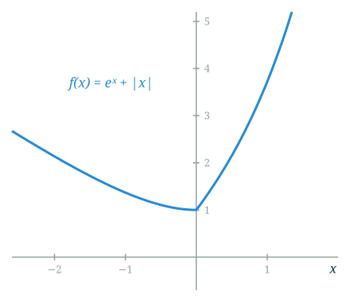
Solving Nonlinear Programs
How do we compute a subgradient of a sum like this?
If $s_1$ is a subgradient of $f_1$ at $x_0$ and $s_2$ is a subgradient of $f_2$ at $x_0$, then $s_1 + s_2$ is a subgradient of $f_1 + f_2$ at $x_0$.
Add the two subgradient inequalities:
\[\begin{aligned} f_1(x) &\ge f_1(x_0) + s_1^{\intercal}(x - x_0)\\ f_2(x) &\ge f_2(x_0) + s_2^{\intercal}(x - x_0)\\ f_1(x) + f_2(x) &\ge f_1(x_0) + f_2(x_0) + (s_1 + s_2)^{\intercal}(x - x_0) \end{aligned}\]
Solving Nonlinear Programs
For $f(x) = e^x + |x|$ at a point $x_0 \ne 0$, both $e^x$ and $|x|$ are differentiable, so we add their derivatives:
\[ x_0 > 0: \quad s = e^{x_0} + 1 > 0 \]
\[ x_0 < 0: \quad s = e^{x_0} - 1 < 0 \]
At a point $x_0 \ne 0$, $f$ is differentiable, so this is its only subgradient there. It is never $0$, so the only point where $0$ could be a subgradient is $x_0 = 0$.
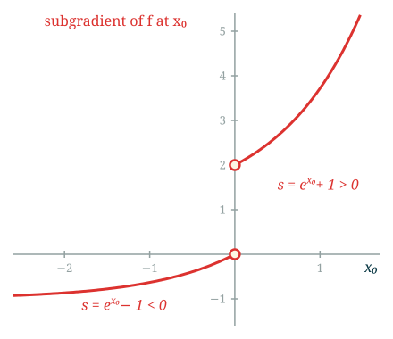
Solving Nonlinear Programs
For $f(x) = e^x + |x|$ at $x_0 = 0$:
- $s_1 = 1$ is a subgradient of $e^x$ at $0$.
- $s_2 = -1$ is a subgradient of $|x|$ at $0$.
So $s_1 + s_2 = 0$ is a subgradient of $f$ at $0$, and $x_0 = 0$ is a minimizer of $f$.
The minimum is $f(0) = e^0 + |0| = 1$:
\[ e^x + |x| \ge (1 + x) + (-x) = 1. \]
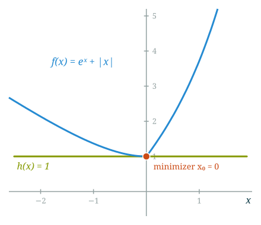
Solving Nonlinear Programs
Example: $f(x, y) = x^2 + xy + y^2 - 3x$, a smooth function of two variables.
\[ \nabla^2 f(x, y) = \begin{pmatrix} 2 & 1 \\ 1 & 2 \end{pmatrix}, \quad \text{eigenvalues } 1, 3 \ge 0 \]
so $f$ is convex.
\[ \nabla f(x, y) = \begin{pmatrix} 2x + y - 3 \\ x + 2y \end{pmatrix} = \begin{pmatrix} 0 \\ 0 \end{pmatrix} \iff (x, y) = (2, -1) \]
Since $f$ is convex and differentiable, $\nabla f(2, -1) = 0$ is a subgradient of $f$ at $(2, -1)$, so $(2, -1)$ is a minimizer.
\[ \min f = f(2, -1) = -3 \]
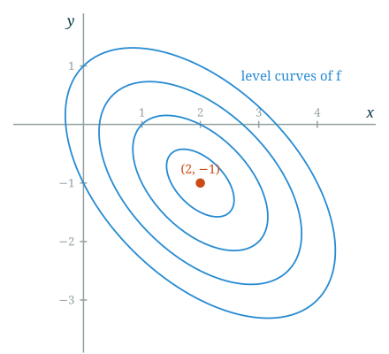
Solving Nonlinear Programs
So far, calculus has told us how to solve nonlinear programs with no constraints.
In the next lecture, we will discuss how to use calculus to study nonlinear programs with constraints.